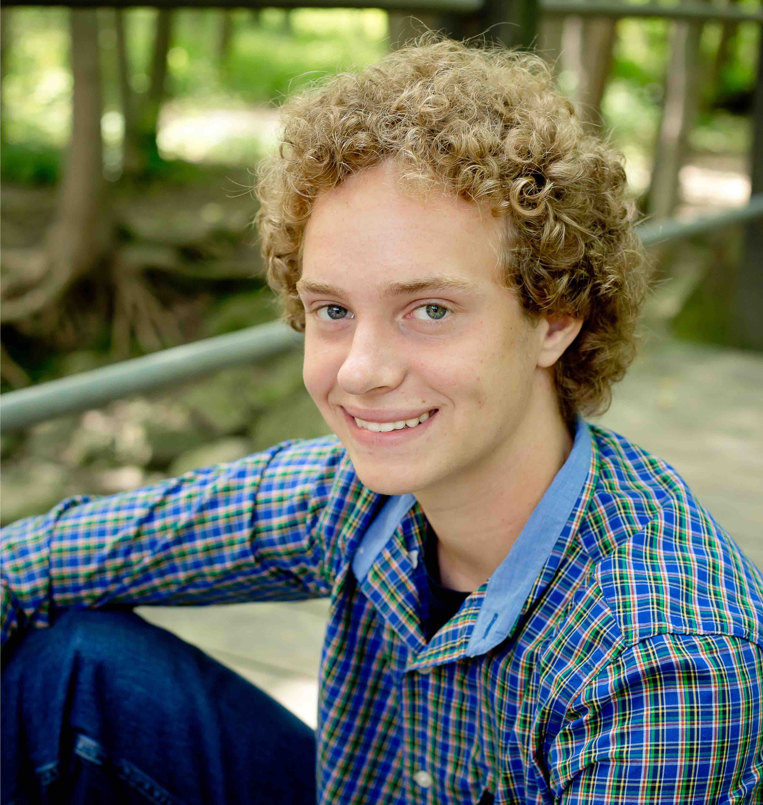

Meet the exec board

Thomas is a Sophomore here at UW Madison and this is his second year in TEDx and his second year as Speaker Liaison. Outside of school and TEDx, Thomas fights for the Taekwondo team, is involved with the Economic Student Association and Investment Banking club. With his free time, Thomas enjoys working out and reading historical novels because he is an uber nerd.

Sofi got involved with TEDxUWMadison at the start of freshman year and is even more passionate about it now. She loves creating fantastic events for her campus and showcasing all the amazing individuals at the university. Sofi is also incredibly passionate about audio storytelling and wants to be an audio journalist some day. She specifically wants to intern at the NPR TED Radio Hour podcast too. She loves bagels, twitter and podcasts more than life itself and is always down to talk politics and feminism.
Nihal enjoys watching Ted talks on the Ted talk app on his phone in his free time. He joined TedX and executive board because he thinks Ted talks are awesome and wanted to get more involved in planning UW's very own TedX event. He seeks to become a doctor in the future and enjoys listening to music, hanging out with friends, watching Netflix, and watching Ted talks in his free time.

Lindsay joined TEDxUWMadison as a freshman, and has been a member of the executive board since her sophomore year. She was fortunate enough to attend TED Talks Live: Education Revolution in New York City fall of 2015 with Curator and President, Sofi LaLonde. Lindsay loves the global aspect of TED, and as an avid traveller herself, is always intrigued by the advances and adventures people are having around the world.

Mitchell first learned about TEDxUWMadison at the student org fair freshman year and has been in love ever since. His favorite TED Talk is "Why city flags may be the worst-designed thing you've never noticed" by Roman Mars. Mitchell enjoys being outside and is very active year round. During the winter he enjoys cross country and downhill skiing. Mitchell is also a member of Euchre club. His career goal is to be an Epidemiologist.
Nick joined Tedx as a Sophomore looking to get involved in a group where he could provide a substantial impact as a general member. As an avid listener of Ted talks, Tedx was a perfect fit! When not controlling the finance activities for Tedx, you will probably find Nick watching or playing sports, more specifically, the Packers and Bucks.